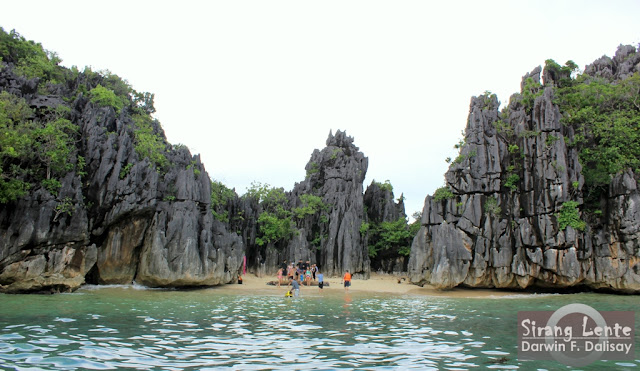

Matukad Island

Minalahos Island
Sea Kayaking
Caramoan in the Bicol Region provides a totally untouched environment for kayakers who are willing to explore its pristine waters. This area is not usually frequented by tourists as there are no hotels or restaurants. However if you are looking for an outer-edge ocean experience,and prefer the unbeaten path,you will find it here. Plan your visit to Caramoan between the months of December and June. While other countries offer only three to five different seascapes, the Philippines can provide almost every kind of seascape that a person can imagine. You may move unobtrusively through crystal clear waters, or explore mangrove swamps, or cut across beaches. You will pass by exotic villages, sail above coral reefs and fish feeding grounds, and even find shelter in sea caves. And if you are looking for something more exciting, that is rough-water kayaking, you may go to any island facing the rugged eastern coast. This is the main reason why international tourists choose the Philippines as their destination: to have one fine rough-sea kayaking experience

Malabsay Falls